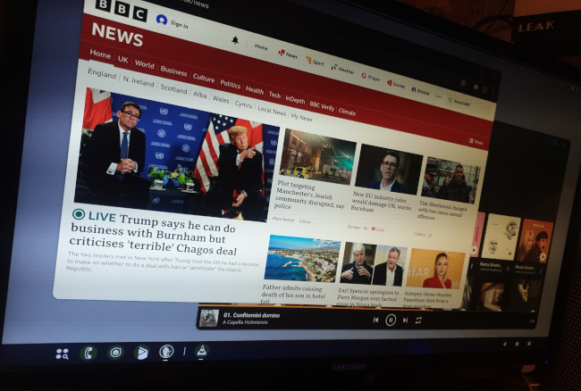

Did you know that recent, de-Googled Android ROMs like Lineage OS have a “desktop” mode?
Five years ago I wrote with guarded enthusiasm about the DEx (“desktop experience”) feature in certain Samsung Android handsets. DEx allowed us to connect a Samsung handset to a monitor, keyboard, and mouse, and use it like a regular desktop computer. Not a super-powerful computer, to be sure, but DEx turned a Samsung cellphone into a viable desktop workstation. I used it, on and off, for several years.
When I started my de-Googling journey a few years ago, one of the things I missed most was DEx. Being a proprietary Samsung technology, it was only available in the stock, spyware-infested Samsung firmware. Lineage OS, Graphene, /e/OS – none had anything to compete with DEx.
Now, it seems, they do.
The origin of desktop mode
DEx was one of Samsung’s best-kept secrets: to this day, I’ve not met anybody other than me who used it regularly. While many Android handsets had an HDMI video output, they just mirrored the cellphone screen on the external monitor. DEx, on the other hand, provided multiple, resizeable screen windows, just like a desktop PC. You could run regular Linux applications and, for a while at least, Samsung officially supported this.
To be frank, I’d expected the (perceived) lack of uptake of DEx to lead to its eventual demise. After all, it must be hugely costly to implement and maintain, and hardly worthwhile for a handful of users. It seems I was wrong; I can only imagine that more people used DEx than I thought.
Android has had a native desktop mode, somewhat similar to Samsung DEx, since version 16. I understand that Google worked with Samsung to develop it for stock Android. Google’s implementation is, remarkably, open-source – it’s in the Android Open Source Project (AOSP) that forms the basis of Lineage OS and most alternative Android ROMs. While I don’t normally have anything good to say about Google, it’s to their credit that they’ve released the desktop implementation publicly, rather than keeping it proprietary as Samsung does with DEx.
What you need to use desktop mode
Desktop mode should be available on Lineage OS 23 or later, which is available for many handsets. I presume that it will work with other ROMs that are based on version 16 or later of the AOSP, although I haven’t tried.
You’ll need some way to connect your monitor, keyboard, mouse and, perhaps, other peripherals to your handset. I’m mostly testing using this generic hub from Groov-E (this isn’t an endorsement – I bought it because it was cheap, from a shop I could walk to). Samsung marketed a couple of docking stations specifically for this application – the “DEx Pad” and “DEx Station” – I’ve tried the native desktop mode with these as well, and they work fine.
The DEx Pad has a cooling fan that blows air across the back of the handset. I can see how this might be useful, because you’re likely to use desktop mode in ways that are more demanding than with the phone’s built-in display. My handset does get warm in desktop mode and – maybe – actively cooling it might prevent its performance being throttled to reduce heat. To be honest, I don’t really know: I haven’t yet tested thoroughly enough. I’ve done most of my testing with the generic USB-C hub.
How desktop mode works
When you connect your handset to an external monitor, it should pop up a prompt which asks what you want to do. Current choices are “desktop” and “mirror”. You can make either the default if you wish.
You can fiddle about with the screen resolution, font sizes, etc., although I didn’t find that changing any of these things had any effect. On my monitor, the handset always output HDMI video at its native resolution and frame rate regardless of what I chose. Perhaps the handset can detect when a monitor is less capable than itself, and scale down the resolution accordingly – I really couldn’t say.
In desktop mode you’ll see a pale imitation of a Linux (or Chromebook) desktop, as in the photo below, which shows it running on a quad-HD monitor.

Because my monitor and my handset’s screen both provide similar screen pixel counts, the text sizes are appropriate on the monitor, even without tweaking (and I’m not sure the tweaks work).
Apps appear in their own windows, which can be moved and (sometimes) resized. The lower toolbar shows a launcher icon, and icons representing the apps that are running. These latter icons show, when clicked, a menu of actions, including “Close”. Closing an app removes it from the screen, but doesn’t stop it running because… Android.
In desktop mode, the external display and the phone screen represent different, independent work sessions. You can’t (as far as I can see) move an app from one to the other. If you launch an app from the phone screen, it stays on the phone screen. To move it to the monitor I found I had to shut down the app completely using the Settings app, and then restart it from the launcher in the desktop toolbar.
To some extent, the external monitor session continues to run, even when you disconnect the monitor. I found that apps I was using on the monitor reappeared in their original states when I plugged the monitor back in. However, this persistence can cause some problems for apps that aren’t prepared for it.
I found that video playback worked on the external monitor using, for example, VLC; but there were problems here, too, which brings me to…
How desktop mode doesn’t work
Android’s native desktop mode isn’t as polished as Samsung DEx, with many irritating glitches. That you can’t move an app easily from the phone to the monitor is a problem, but a solvable one. Some problems, however, are more persistent.
Some apps just don’t work at all because, I guess, they can’t cope with the landscape screen layout. Some apps come up on the phone screen, even when launched from the desktop; some start on the desktop, and then behave badly. For example, I could read my e-mail using the K-9 app, but I couldn’t send mail, because the mail composition window just came up empty. I found many similar oddities.
There’s also limited control over audio routing. When I started VLC on the phone screen, while connected to a monitor, audio went to the headphone jack – for handsets that have a headphone jack. When I started VLC on the monitor, audio went to the HDMI connection. That’s also fine if you have a monitor that handles audio. I tried an external USB DAC, and it didn’t work at all when the monitor was plugged in, even though it worked fine when it wasn’t. Playing audio to an external DAC worked fine with Samsung DEx. Since it doesn’t work here, your audio options are limited. It would be nice if later releases offered more flexibility in this area.
There’s also a general clunkiness that I didn’t see with DEx. Screen windows flicker when they’re moved or resized, and sometimes screen regions seem slow to update.
I should point out that Samsung’s own apps, like its browser and e-mail, were designed to be compatible with DEx. For example, in DEx mode the Samsung browser can open multiple screen windows. The Samsung e-mail app allows me to have a message open in one screen window, and my reply in another. Regular, generic apps won’t have this support – on the external monitor they look and work just as they do on a handset. I don’t know if Google’s apps have better desktop support because, of course, I don’t use them.
Closing remarks
It’s good to see a desktop mode in de-Googled custom ROMs, even though it’s somewhat limited just now, and a little erratic. I suspect that the desktop mode is strongest in general with web-based applications, just as ChromeOS is. While my e-mail app didn’t work well, a browser-based e-mail interface was fine. If you’re familiar with Chromebooks, Android’s desktop mode will offer few surprises. I don’t know if there is code in common between the two platforms, but I can see how there might be.
The fact that desktop mode exists at all was a surprise to me but, presumably, there is a need for it. With luck, it will be improved.
Have you posted something in response to this page?
Feel free to send a webmention
to notify me, giving the URL of the blog or page that refers to
this one.